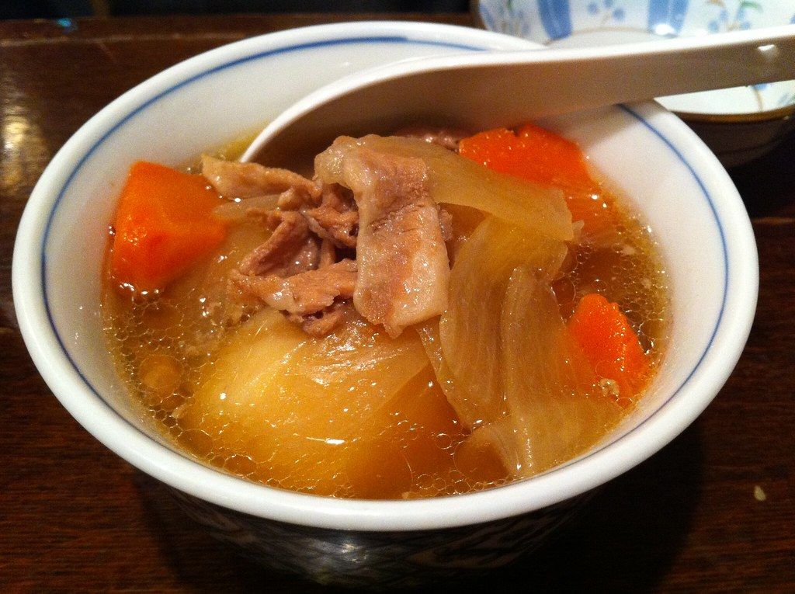

Home

The 和風 Meat & Potato Stew
Nikujaga is some gooooooooood stuff. It's a fusion of Japanese and Western cuisine (it's got potatoes and boef so 'Western' I guess), said to have been inspired by beef stews of the British navy way back when. I'm just regurgitating what I read off wikipedia. In any case, this shit's good. The sauce is made with dashi, soy sauce, sake, mirin, and a bit of sugar to sweeten it just a tad. Slaps with rice. Gotta add snap peas for that color, and don't forget the konyaku. Some kind of noodle that's apparently good for dieting. IDK if that's true, but I like how chewy that shit is. Make some nikujags today or else!
Ingredients
- 1 onion (8.8 oz)
- 1 carrot (4.5 oz)
- 3 Yukon gold potatoes (1.2 lb)
- 8 pieces snow peas (or use green beans or green peas)
- 1 package shirataki noodles (7 oz))
- 1.5 lb thinly sliced beef (like ribeye or sliced pork; substitute with shiitake, king oyster, or portobello mushrooms for vegan/vegetarian)
- 1 Tbsp neutral oil
For the Seasonings
- 2 cups dashi (Japanese soup stock) (use standard Awase Dashi, dashi packet or powder, or Vegan Dashi)
- 4 Tbsp mirin
- 4 Tbsp soy sauce
- 2 Tbsp sake
- 1 Tbsp sugar
Instructions
Preparation
- Before You Start: Please note that this recipe requires 30 minutes of resting time. Gather all the ingredients.
- Peel 1 carrot and cut it into 1-inch (2.5 cm) pieces. Here, I use a Japanese cutting technique called rangiri where we cut the carrot diagonally while rotating it a quarter turn between cuts. This helps to create more surface area so it will cook faster and absorb more flavor.
- Cut each of the 3 Yukon gold potatoes into quarters. Tip: Yukon golds keep their shape better during simmering, but I sometimes use russet potatoes, which tend to break easily but absorb flavors nicely.
- Remove the sharp edges of the potatoes with a knife to create smooth corners. Then, soak the potatoes in water to remove the starch. Tip: We call this Japanese cutting technique mentori. This prevents the potatoes from breaking into pieces. If the potatoes have sharp edges, they are likely to bump into each other and break while simmering.
- Remove the strings from 8 pieces snow peas.
- Bring a small pot of water to a boil and add a pinch of salt. Add the snow peas.
- Blanch them in the boiling water for 1 minute and take them out. Keep the water boiling.
- Drain 1 package shirataki noodles and cut them roughly in half. Blanch the noodles in the pot of boiling water for 1 minute to remove any odor.
- Drain well and set aside. Cut the thinly-sliced beef in half or thirds (depending on the size) so that the pieces are about 3 inches (7.6 cm) wide.
To Cook the Nikujaga
- Preheat a large pot or Dutch oven (I used a 4-QT Staub cocotte) on medium heat. Then, add 1 Tbsp neutral oil and sauté the onion wedges.
- When the onion wedges are coated with oil, add ½ lb thinly sliced beef (such as ribeye) and cook until no longer pink.
- Add the potatoes and coat them well with the cooking liquid. Tip: This coating will help keep the potatoes from breaking.
- Add the carrot pieces and shirataki noodles and mix everything together.
- Add 2 cups dashi (Japanese soup stock), making sure there‘s enough liquid to almost cover the ingredients (it doesn‘t have to fully cover the ingredients). If there‘s not enough liquid, add water.
- Cover with a lid and continue to cook. Once boiling, skim the scum and foam from the surface with a fine-mesh skimmer.
- Add 1 Tbsp sugar, 2 Tbsp sake, 4 Tbsp soy sauce, and 4 Tbsp mirin.
- Mix it all together and place an otoshibuta (drop lid) on top of the ingredients.
- Simmer on low heat for 12–14 minutes, or until a skewer pierces a potato easily. Tip: The otoshibuta holds the ingredients in place and is necessary to maintain the shape of the vegetables. They bump into each other and break easily when they are loose. Do not mix the ingredients while cooking; the otoshibuta will help distribute the cooking liquid and its flavors.
- Turn off the heat and remove the otoshibuta. Ideally, let the Nikujaga rest (uncovered) for 30–60 minutes before serving. The flavors will soak into the ingredients while cooling down.
To Serve
- When you are ready to serve the Nikujaga, add the blanched snow peas to the pot and cover to reheat on medium heat. When simmering, reduce the heat and let it simmer for a few minutes. Tip: Add the snow peas right before serving to keep their bright color.
- Turn off the heat and serve the Nikujaga with some cooking liquid in a large serving bowl or individual bowls.
To Store
- You can keep the leftovers in an airtight container or in the pot and store in the refrigerator for up to 3–4 days. Nikujaga tastes even better on the second day! To freeze, remove the potatoes as their texture changes when frozen. You can keep it in the freezer for up to a month.